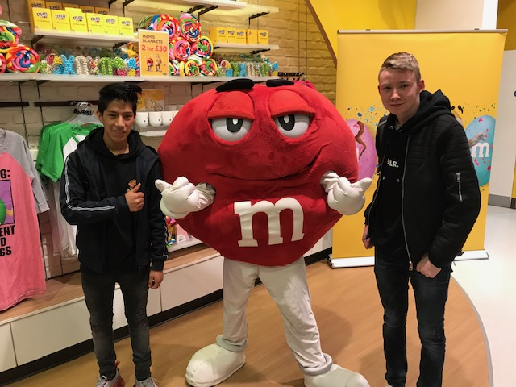
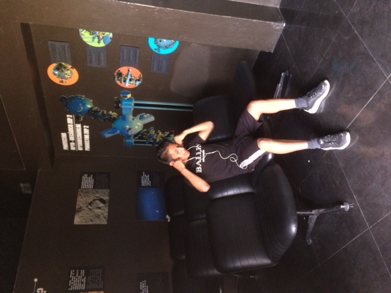

3 Dingen over mij
Op deze pagina ga ik in het kort bespreken wat ik zoal leuk vind om te doen
en als laatst ga ik vertellen hoe ik ben qua karakter.
Games
Ik vind niet echt heel veel spellen leuk om te spelen mede omdat ik er niet zo goed in ben
maar er zijn er wel twee tot drie die ik wel kan en ook nog is leuk vind om te spelen.
De eerste die ik leuk vind om te spelen in mijn vrije tijd is League of Legends.
Het is een spel waar jij een character bestuurd en je heb dan verschillende abillities.
Het tweede spel is Rainbow six siege, dat is een schietspel waar bij een game mode je een bomb moet verdedigen
en na 2 keer verdedigen moet je de bomb zien te planten bij de verdedigers. En het laatste spel Among Us.
Dat is een spel waarbij je met maximaal 10 mensen in een potje zit en een van die 10 heeft de ability om jou te vermoorden
als hij iedereen heeft vermoord dan heeft ie gewonnen. Maar als de ‘crewmates’ alle tasks hebben
voltooid voordat de imposter iedereen heeft gekilled dan winnen de ‘crewmates’.

Sport
Ik heb voor ruim 8 jaar op voetbal gezeten, de eerste paar jaar waren
echt leuk omdat ik toen nog wel redelijke goeie team genoten had maar over de jaren werden die steeds slechter.
Ik kon daar niet tegen dat mijn niveau zo veel hoger was
dan dat van mijn team genoten. Ik kreeg de gelegenheid om naar een hoger team te gaan maar die kinderen
die daar voetbalden mocht ik niet echt dus had ik voor mijzelf besloten om voetbal nog 2 jaar de kans te geven
als ik in die 2 jaar geen goeie team genoten kreeg dan zou ik stoppen met voetbal. En dat gebeurde
dus ik ben gestopt met voetbal en moest ik een andere sport kiezen en ik had gekozen voor volleybal
omdat dat het soort van enige leuke leek als het ging om sport.

Hoe ben ik?
Dit gaat niet zo heel lang worden maar ik ben het aan het proberen.
Ik ben best een rustig persoon als het moet.
Maar als ik goeie vrienden heb of mensen waarbij
ik mezelf op mijn gemak voel dan ga ik wel veel praten
en soms word ik dan ook druk.
Ook in de klas af en toe, maar ik vind dat ik mijzelf tot nu
toe goed in de hand heb want ik ben er nog niet uitgestuurd
en de leraren vinden mij denk ik wel een goeie leerling die niet voor onrust zorgt.